Resolving Compiler Warnings¶
Introduction¶
Resolving compiler warnings is not just about making the compiler be quiet. It is about making the code better, more correct. While almost any warning can be easily avoided with a simple type-cast,variable initialization, etc, long term we are all better off by doing the right thing. The general approach should be:
analyze and understand the code, the meaning of types, variables involved
think about what would make sense if you were to write the code from scratch (consider things like range of a variables, operations involved)
consider API compatibility and standard API specification
chose solution case by case; there is no one-size-fits-all rule
This document is not meant to address all types of warnings. It is meant to provide some guidelines and examples how to go about resolving some of the common ones that are relevant, especially in the context of the increased level of compiler warnings VxWorks 7 SR0610 release. But the guidelines are relevant in much wider scope.
Sign conversion and sign compare warnings¶
The sign conversion warnings are enabled by -Wsign-compare and -Wsign-conversion compiler options (gcc and LLVM). These two are similar as they are about assigning or comparing unsigned and signed values. The range of a signed and an unsigned types are different, even if the size is the same; therefore assignments and comparisons have to be done carefully to make sure that values in non-overlapping ranges are excluded or properly handled. Ideally, the types of variables, constants, function parameters, structure members used for values of the same meaning should all use the same type, either all signed or all unsigned (and of course the same size).
Bit-wise operations¶
Bit-wise operations (bit mask, bit set, bit shift, etc) normally should be performed using unsigned values. In fact the C11 standard states:
“Some operators (the unary operator ~, and the binary operators <<, >>, &, ^, and |,collectively described as bitwise operators) are required to have operands that have integer type. These operators yield values that depend on the internal representations of integers, and have **implementation-defined and undefined aspects for signed types*.*”
That means variables, constants, function parameters and structure members used to represent bit fields should be preferably all unsigned.
Unsigned constants¶
In C code constant values can use the ‘u’ or ‘U’ suffix to indicate the compiler that they are represent unsigned values (e.g. 100u). The ‘u’ suffix can also be combined with ‘l’ or ‘L’ to indicate “unsigned long” (e.g. 100ul). For example, a constant definition used for bit-mask operations can be defined as:
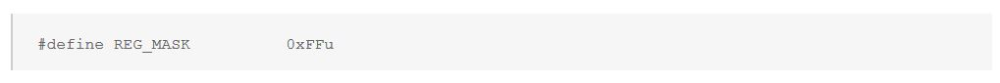
The suffix is not recognized in assembly files. When a constant is supposed to be usable in either C or assembly code, it can be conditionally defined based on _ASMLANGUAGE. To simplify, a set of abstraction macros are provided (made visible by including vxWorks.h):
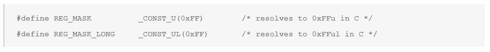
Existing API and open standard functions¶
It is not always feasible to change functions signatures; backward compatibility and standard specifications must be considered. For example, the <options> argument to semMCreate(), rtpSpawn() and similar functions, or <taskPriority> argument for taskSpawn() have been declared as signed integer for a very long time. Although they would be better be defined as unsigned, to avoid potential impact on user applications, they shall remain as is. That means, when such argument are used internally in VxWorks libraries, they may need conversion to unsigned value, with explicit typecast (this is a case when typecast is acceptable). For example the <options> value is stored in WIND_RTP structure and used internally in bitwise operation as unsigned.
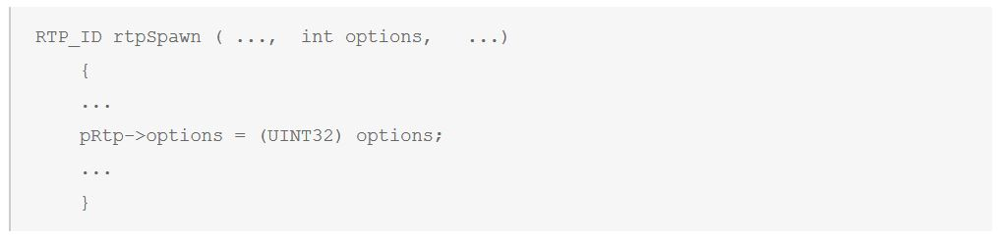
On the other hand, there are situations where changing the signature of a public interface is warranted. For example, the following is a ‘grep’ of VxWorks 7 source pertaining to using the return value of sysClkRateGet() as the value for the ‘delay’ argument to taskDelay():
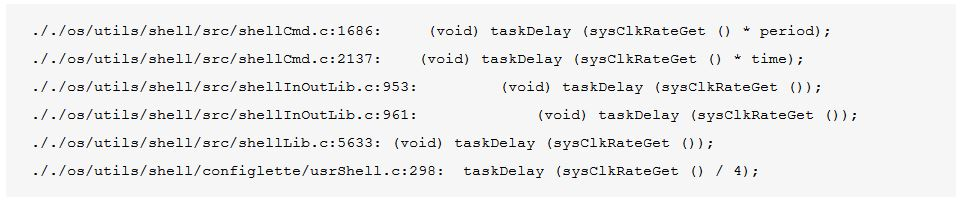
Given that the return value of sysClkRateGet() is a signed quantity (int) and ‘delay’ parameter is an unsigned quantity (_Vx_ticks_t -> unsigned int), the application of the -Wsigned-conversion compiler option results in a “warning: implicit conversion changes signedness” warning. Note that the usage of taskDelay() is merely a subset of the overall scenarios that will result in the -Wsign-conversion related warning. The usage of sysClkRateGet() as an argument to any Wind kernel API that accepts a “delay” or “timeout” parameter that is typed as _Vx_ticks_t will generate the -Wsign-conversion related warning. For example, the usage of wdStart(), msgQSend(), msgQReceive(), semTake(), semRTake(), semWTake(), taskDelay(), taskWait(), eventReceive(), rtpWait(), etc. are susceptible to the warning.
Given the wide-spread occurrence of this scenario (and thus the large number of typecasts required in VxWorks source code to silence the warning), it is recommended to “correct” the signature of sysClkRateGet(), sysClkRateSet(), sysAuxClkRateGet(), and sysAuxClkRateSet() to return/accept an unsigned quantity for the tick rate. In other words, the following signature changes are recommended:
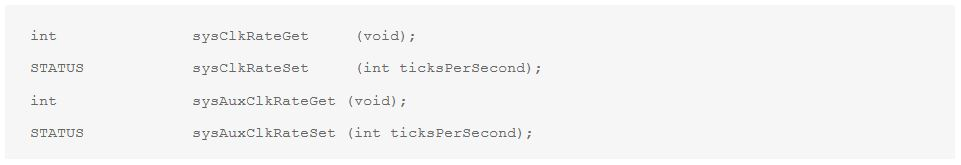
To:
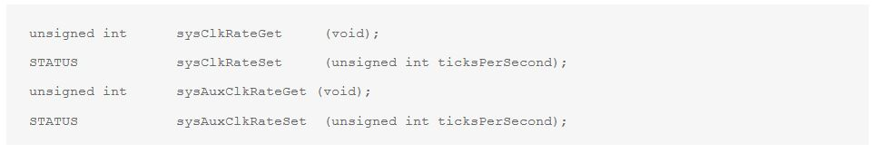
Uninitialized Variable Warnings¶
LLVM and gcc have two type of warning related to uninitialized variables: -Wunitialized and -Wmaybe-uninitialized. In either case, the compiler may report a variable being used before it’s value is set. Note that the compiler in some cases may report a false positive. As with any warning code flagged with such warning should be reviewed for logic, and appropriate action taken. Do not just automatically add an initialization; doing that has the potential to hide an actual bug; it can also hide a bug that is introduced by future changes. But, of course, if the algorithm requires an initial value (e.g. a counter starting with 0), initializing the variable as such is the right thing to do.
False positives¶
For false positives - i.e. when the logic was verified and the compiler emits a false uninitialized warning, it may be tempting to avoid the warning by adding a “dummy” initial value. That, however (just like adding typecasts to avoid compiler warnings), should be last resort. Instead, consider these solutions for modifying the code to reduce code complexity of the functions. If something is hard understand by a person, it has a higher potential to be misunderstood by the compiler as well.
For example, the following code may result in compiler warning about x being used uninitialized. The compiler cannot always tell that the two if statements have the same condition. This is especially true when global variables are involved in the condition (the compiler can’t generally tell whether the global variable can be changed by another execution context). But we, programmers, can.
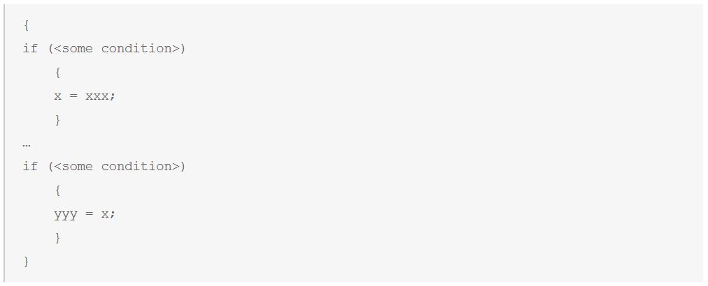
If we determine that the condition is indeed invariant between two evaluations, modifying the code as follows helps the compiler making a more informed decision about the initialization of variable <x> being tied to <myCondition> being set to TRUE.
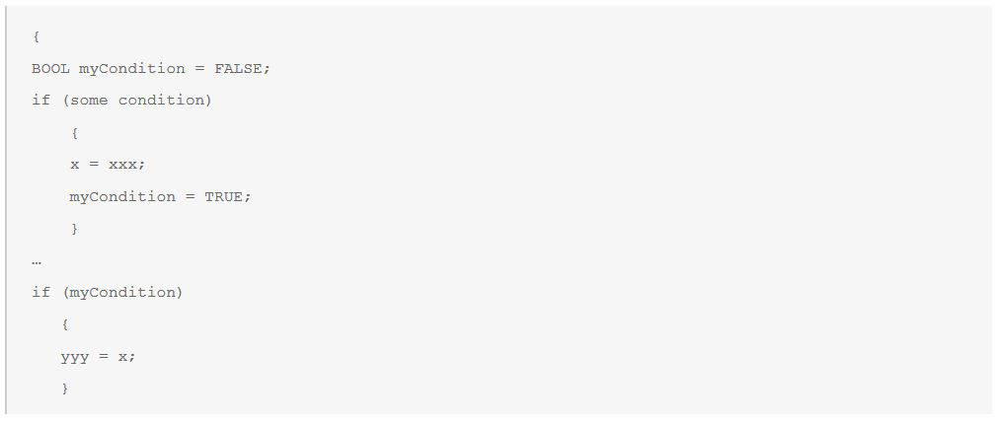
Adjusting warning levels¶
The VxWorks build system defines several warning levels that can be used for building code in a VSB. Normally this means setting the warning level in the layer’s Makefile, by setting one or more of the following make variables:
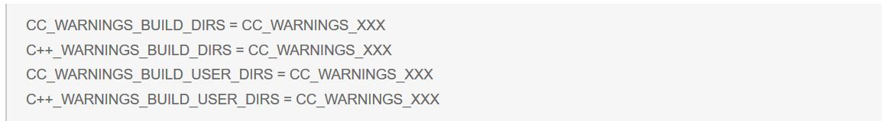
Note that, as shown above, the layer Makefile syntax does not use the $ syntax.
When the warning level needs to be set for some source directories of a layer, Makefiles at individual directories can set the following make variables:
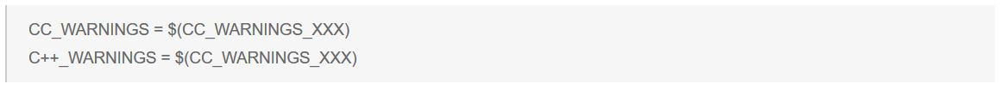
The above will apply the selected warning level all kernel or user side builds, respectively, for C and C++ code in the layer. The default (nothing set in the layer’s Makefile) is CC_WARNINGS_MED.
Available warning level choices (in place of CC_WARNINGS_XXX):
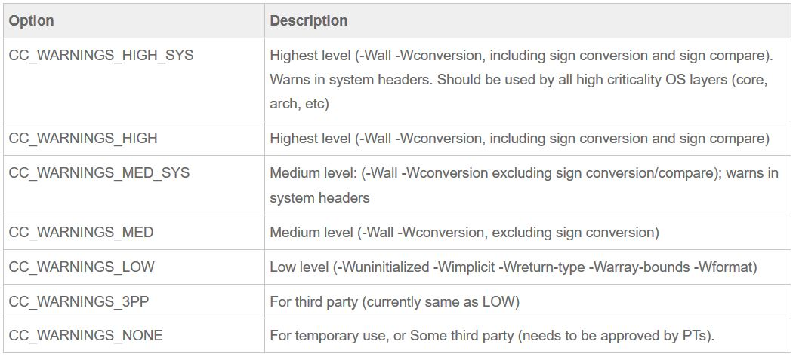
Third Party Code¶
It is desired that local WR specific changes are minimized for third party code (whether open source or proprietary) that is regularly synchronized with outside repository. When submitting patches to the external repository is not accepted or not feasible for other reasons, the layer can override default build flags to CC_WARNINGS_3PP.
The use of CC_WARNINGS_NONE should be avoided even for third party code when that code is intended for customer application use. Using this option needs to be approved by a PT.
Change Log¶
Date |
Change Request ID |
Version |
Change By |
Description |
06/18/2020 |
N/A |
0.1 |
Shree Vidya Jayaraman |
Transferred content from Resolving Compiler Warning Jive page |